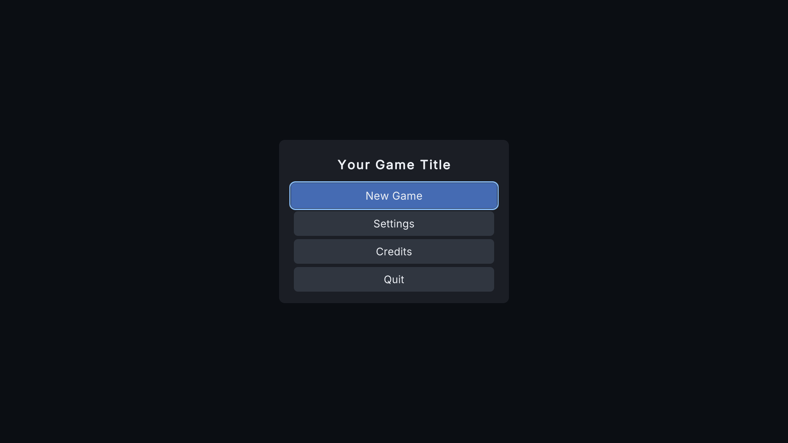
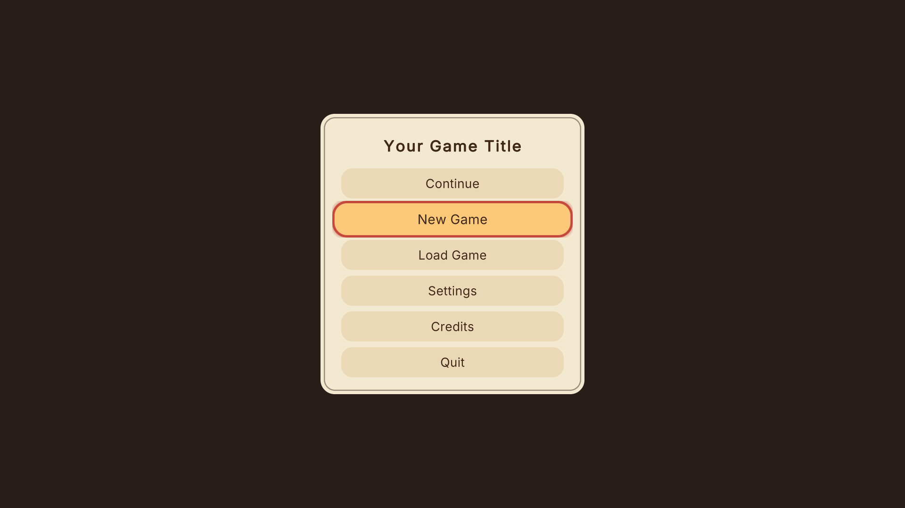

Make it yours
Your players should see your game, not a menu kit. Everything the player sees, hears or feels in the front end can be changed or switched off, without code: the look (a theme), where things go (a layout), sizes and control styles, how messages and prompts show, the backgrounds and what plays behind the menu, which buttons and settings show, your title and logo. Start from a preset, then change only what you want. Every change shows live on the menu in the open scene, in edit mode and in Play mode.
| Before: Clean | After: Storybook |
|---|---|
 |
 |
1. Pick a look and a layout (one click each) #
Themes (the look): Clean, Tactical and Storybook, each with a high-contrast version. Layouts (where things go): Classic Center, Side Column, Bottom Bar and Fullscreen Tabs. Any layout works with any theme.
- In the editor: Tools > Shipready > Menus > Menu Builder > Theme tab: Use next to a theme, and Use next to a layout further down. Ctrl+Z undoes either.
- In the demo: open
Samples/Scenes/TryIt, press Play, and click Theme and Layout in the top right corner (or press T and L; the gamepad's View button cycles themes). - In your game: a Theme Cycler or Layout Cycler component on any Button lets players switch too.
2. Make your own theme and layout #
Never edit Shipready's own assets (updates would replace them). Make a copy instead:
- Theme tab > Make my own next to any theme or layout, or
- Assets > Create > Rare Geometry > Settings Menu > Theme From Preset (or Layout From Preset).
Copies go to Assets/RareGeometryData/Shipready/Themes and .../Layouts, are used by the menu in the open scene, and are selected so you can edit them in the Inspector.
What a theme controls #
| Group | Settings |
|---|---|
| Font | Font, Heading Font, title/heading/body/small sizes |
| Colors | background, scrim (behind dialogs), panel, text, muted text, accent, the five button states, slider track, focus frame. Alpha 0 hides a part |
| Sprites | panel, control, focus frame, track, handle, check mark (9-sliced when they have borders) |
| Control styles | Button Shape (Theme Sprite, Rectangle, Rounded, Pill, Outline, Underline, Text Only), Button Sprite, Choice Style (Arrows or Dropdown), Toggle Style (Checkbox or Switch), Show Tab Indicator, Show Scrollbar, Scrollbar Width |
| Control sizes (0 keeps the prefab's) | menu button width and alignment, dialog button width and height, slider, selector, arrows, check box, value text, tabs, button pictures; Button Text Alignment |
| Sizes and spacing | button height, row height, panel padding, spacings |
| Text style | uppercase headings and buttons, bold headings, heading letter spacing, the smallest size long texts may shrink to |
| Focus and transitions | Show Focus Frame, focus zoom and timing, frame outset; screen transition Fade, Slide Up, Slide Down, Slide From Left, Slide From Right, Scale or None, length, slide distance, Transition Easing curve (any screen can have its own: Own Transition); Hover Scale (grows under the mouse) |
| Corners | Button Corner Radius, Panel Corner Radius (0 keeps the sprite's own; needs a 9-sliced sprite) |
| Logo | Logo Tint: multiplied with your logo, so a light logo stays visible on a light panel (white keeps its own colors; a Theme Override can change it for one screen) |
| Cursor | Cursor and Cursor Hotspot: your own mouse cursor while a menu shows (import it as Texture Type Cursor, Read/Write on) |
| UI sounds | move, submit, back, open, slider, toggle, error, and their volume. Leave one empty for silence |
What a layout controls #
| Part | Settings |
|---|---|
| Main menu, pause, settings, credits, dialogs | Horizontal (Left, Center, Right, Stretch), Vertical (Top, Middle, Bottom, Stretch), Width and Height (0 keeps the prefab's), Margin, Offset, Column (buttons in a column or a row), Content Alignment |
| Title screen, loading screen | where their texts sit (left, center, right; top, middle, bottom) and the margins |
| Subtitles | where the subtitle box sits |
| Settings | Settings Tabs On Side (a list at the side instead of tabs on top) and its width |
| Screen scaling | Reference Resolution and Match Width Or Height |
Other screen shapes. Menu Root (or menu builder > Setup > Layouts for other screen shapes) takes a Portrait Layout and an Ultrawide Layout. The right one is used by itself when the screen's shape changes; leave one empty and the usual layout is used.
Players' accessibility settings (menu size, text size, high contrast, reduce motion, focus outline) work on top of every theme and layout.
3. Switch off what you don't need #
Most of these are in one place: menu builder > Setup tab > Options for each screen. Each screen has its own foldout there, including its buttons, its words and the menu music.
| Part | Where | Switch |
|---|---|---|
| Whole screens (title, main menu, settings, credits, pause, loading, controller prompt) | front end (Menu Root) > Features | buttons leading to a removed screen hide |
| Any main or pause menu button | the menu's Menu Button List (on its Buttons object) | untick Visible |
| "Press any key" prompt | Title Screen | Show Prompt, Prompt Animation (Blink, Pulse, None), Blink Seconds (0: still) |
| Continue, Load Game, Quit / Main Menu, Quit in pause | Main Menu Screen / Pause Screen | Show ... switches |
| A setting (it still saves and applies) | the setting's asset | Hide In Menu; a tab with nothing left disappears |
| The help line | Settings Screen | Show Help Text |
| Search box, per-setting reset buttons | Settings Screen | Show Search, Show Reset Buttons |
| A setting only on some platforms, or only while another is on | the setting's asset | Platforms, Show When Id / Show When Values |
| FPS counter, notices | front end | the FpsCounter and Toast objects (delete them, or move them) |
| Loading tips, progress | Loading Screen | Show Tips, Show Progress; Progress Style (Bar, Ring, Spinner) and Pictures (one picked at random) change the look |
| Speaker names in subtitles | Subtitle Display | Show Speaker Names, Speaker Color |
| Button pictures in rebinding | Rebind panel | Binding Display: Icon When Available, Text Only, Icon Only |
| Focus frame, animations, tab line, scrollbar | Theme | Show Focus Frame, Screen Transition None, Show Tab Indicator, Show Scrollbar |
Keyboard and gamepad navigation skips anything hidden. The Keep-display countdown and the unsaved-changes question stay on: they protect your players. Their words, look and timing are still yours.
4. Order, rename and add menu buttons #
Select the main menu's (or pause menu's) Buttons object: its Menu Button List shows the buttons in the order the player sees them. Drag entries to reorder, type a Label (your words, or a string-table key to translate it), give an Icon, untick Visible to hide. To add a button, add an entry without a Button and pick its Action (Open Settings, Open Credits, Quit, and so on): it looks like the others and is navigated like them.
5. Your title and logo #
On the front end (Menu Root > Your Game), or the menu builder's Theme tab:
| Setting | What it does |
|---|---|
| Game Title | your title (or a string-table key, to translate it) |
| Show Game Title | off when your logo already has the name in it |
| Logo | your logo picture (empty: the title text only) |
| Logo Placement | Above Title, Replaces Title (the text comes back if you clear the logo) or Below Title |
| Logo Height | its height in canvas units |
| Logo Max Width | the widest it may be (0: no limit); a wide logo shrinks to fit, keeping its shape |
| Logo Keep Aspect | keep the logo's own shape (off: stretched to the height and widest width) |
They show on the title screen and the main menu, centered like the title in every layout.
6. Messages, prompts and holds: the style pickers #
The first thing in the Menu Root inspector is Style (changes the menu at once). Each picker's first choice is "Theme (its value)"; any other choice is this front end's own.
| Picker | Choices |
|---|---|
| Display As (notices, questions, warnings, the controller prompt) | Full Text, Short Text, Icon Only, Icon In Color (the icon in its context color), Icon And Short Text, None |
| Prompt Style ("Press any key", the button hint bar) | Full, Short, Key Only, Icon Only, None |
| Hold Fill (hold to skip the splash, hold to Reset All, Hold To Confirm) | Ring, Key Fills, Bar, Radial, Panel, Sprite, None |
| Message Position | Bottom Center, Top Center, Center, Beside Selection, Under Selection, Custom (anchor and offset in the theme); notices can slide in |
| Hold To Confirm, Hold Seconds | Quit, Main Menu, Reset All and Discard need the button held |
The built-in icons (info, done, warning, error, question, restart, saving, loading, controller, display, locked, unavailable, continue, back) are clean outline symbols with one stroke weight. They live in the theme's Message Icons set: swap any picture or color there. A single message can override Display As and its color with its own Message Display component.
7. Backgrounds and see-through #
What fills the screen behind each menu. A theme has one background per screen type: Main Menu (title screen, main menu, credits, extras), Pause, Settings and Pop-up (questions and messages over another screen). The front end can override each one (Menu Root > Backgrounds and see-through, or the menu builder's Theme tab). One screen can also have its own: tick Override Style on its Menu Background component.
| Mode | What it shows | Its settings |
|---|---|---|
| None | nothing: the game or scene as it is (clicks still stop at the menu) | |
| Solid Color | the theme's background color, or your own | Use Theme Color, Color |
| Gradient | two colors blended | From, To, Direction (top to bottom, left to right, radial) |
| Image | your picture | Fit (Cover, Contain, Stretch, Tile, Center), Pan And Zoom (a slow drift; off with Reduce Motion), its seconds and zoom |
| Blurred Game | a soft, blurred still of the game as the menu opened (Built-in, URP and HDRP; a plain color where the game can't be captured) | Blur Strength |
| Live Camera | the live scene through the Menu Camera (below), with a light dim over it | |
| Video | your looping video, moving even while the game is paused (a still with Reduce Motion; a plain color until it starts, or if it can't play) | Video Clip, or Video Url (a file name in StreamingAssets or a full URL; WebGL needs this), Fit, Video Sound |
Every mode has its own Tint and Opacity (for Live Camera they are the dim's color and strength).
See-through panels. Panel Opacity, Dim Opacity and Button Opacity are set in the theme, or on the front end (Own Opacity). The focused button always stays solid, and High Contrast keeps everything solid. Each menu can differ: tick Own Opacity on a background (Menu Root, a theme or one screen's Menu Background) to give those menus their own Panel Opacity and Button Opacity. If text could become hard to read over a bright or dark game, the Menu Root inspector warns you (WCAG AA, 4.5:1).
Menu music. Kit window > Setup > Options for each screen > Menu music: a track each for the main menu, pause, settings, credits and loading, with Fade Seconds and Volume. Leave Settings or Credits empty and what's playing carries on; leave the others empty for silence there. Music stops when no menu shows, plays through a pause, and follows the Music Volume setting through the Music mixer group. The Try It and Cozy Adventure demos have it on.
8. Live scenes behind the menu: the Menu Camera #
Theme tab > Add Menu Camera adds a Menu Camera Director with three shots taken from where the Scene view looks. Move the Shot objects to frame your scene.
| Setting | Choices |
|---|---|
| Mode | Scene Camera (one camera in your scene), Shots (points that cut or crossfade on a timer, in order or at random, each with its seconds, field of view and a slow drift), Orbit (circles a target, with a gentle dolly), Render Texture (your own camera draws into a texture) |
| Active When | Front End, Front End And Pause, Live Background Only, Manual (your code calls Activate / Deactivate) |
| Backdrop Scene | a scene loaded additively behind the menus (it must be in the build's scene list), unloaded when they close |
| Disable Other Cameras | turns the gameplay cameras off while the menu shows and turns exactly those back on when play starts |
It works with the Built-in Render Pipeline, URP (as a base camera) and HDRP, and with Domain Reload off. Reduce Motion stops the drift and orbit and turns crossfades into cuts. With Cinemachine installed, add Cinemachine Menu Shots next to the director (Mode: Scene Camera): your Cinemachine cameras take turns and the brain blends between them with your own blends.
9. Try it while playing #
Open Samples/Scenes/TryIt and press Play. A sample logo sits above the title and three camera shots crossfade behind the main menu. Make it yours (top right) opens a panel that switches, while playing:
- the theme and the layout;
- Display As, the prompt style, the hold fill and the message position;
- the background, the opacity and the title (text, logo and text, logo only);
- Hold To Confirm.
It can also show a sample notice and ask a sample question. Add a Style Cycler to your own button to give players any of these choices.
10. Change one element only #
Add a Theme Override component to any image or text in the front end: a different color, sprite, font or font size, or Hide it. Overrides always win over the theme; untick one and the theme's look comes back.
Move or scale one element. Select it in the Hierarchy (a button, the settings footer, the tabs, anything inside the front end), then menu builder > Setup > Options for each screen > Move or scale the selected element. It gets an Element Placement with Move By and Scale. It stays put when lists rearrange, and removing the component puts it back. The title and logo have their own Title Offset and Logo Offset under Your title and logo. To place a whole panel, use a layout.
11. Move, resize or add anything: your own front end #
Setup tab > Make my own front end (or Tools > Shipready > Menus > Make My Own Front End) makes a linked copy of the whole front end (a Prefab Variant) in Assets/RareGeometryData/Shipready/FrontEnd and uses it in the open scene. Open it and change anything: move or resize panels, add images, reorder, delete. When you update Shipready, your copy keeps every change you made and still gets Shipready's improvements for everything you didn't change.
12. Change the words #
Every text goes through the string tables (Content/Localization/English.asset, plus your own languages; see Languages).
13. Bring your own UI #
Use your own panels and keep Shipready's settings, saving and safety nets:
- Turn Shipready's screen off in Features (for example Main Menu).
- Put a Menu Button component on each of your buttons and pick its action. Quit and Main Menu ask for confirmation unless you untick Confirm.
- Your own pause screen: turn Pause off in Features, tick Pause Without Screen on the front end, and show your panel from its On Paused event (hide it on On Resumed). Time, audio and the input lock still work.
For code: MenuRoot.Instance has the same actions (NewGame(), OpenSettings(), Pause(), SetTheme(), SetLayout() and so on), the ScreenShown event tells you which kit screen just appeared, and SettingsController reads and changes any setting (see Extending and API).